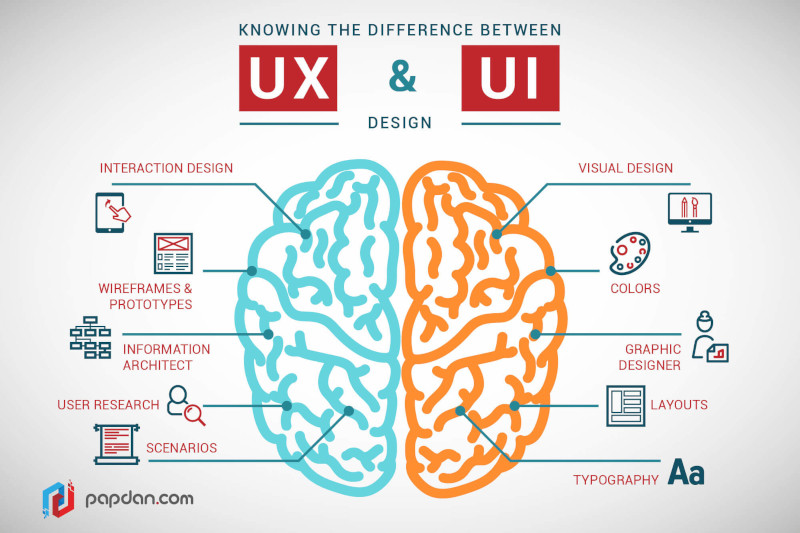

UX Design
2018-06-30

I spent the last year learning (UX) User Experience Design. I've worked with some talented designers in the past and was mesmerized by their work.
I decided to learn the Fundamentals of Graphic and UX Design to increase my knowledge and skills.
Graphic Design and UX Design are huge areas that require years of study and practice to become great. My goal was to learn the basics to develop an eye for what makes "Good Design" so I can collaborate better with designers in the future.
Here's a list of topics I learned.
Fundamentals of Graphic Design
- Line
- Color Theory
- Shape
- Texture
- Space
- Form
- Typography
- Contrast
- Hierarchy
- Alignment
- Balance
- Proximity
- Repetition
Basics of UX Design
- Wireframes
- User Research
- Personas
- User Flows
- Usability
- Validation
Tools
- Adobe Photoshop
- Adobe Illustrator
- Balsamiq
- Figma
- GNU Image Manipulation Program (GIMP)
- Inkscape
- Scribus
- Pencil Project
Books
- How to Be a Graphic Designer without Losing Your Soul
- Know Your Onions: Web Design
- Burn Your Portfolio: Stuff they don't teach you in design school, but should
- Don't Make Me Think, Revisited
- Smashing UX Design: Foundations for Designing Online User Experiences